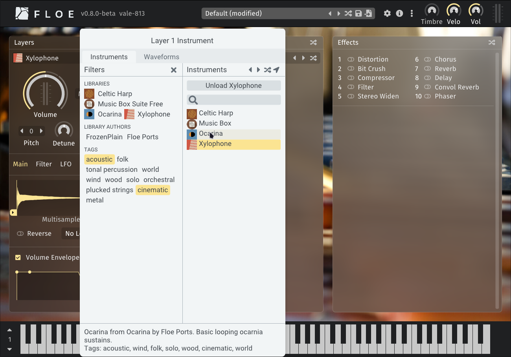

Streamlined sample-based instrument platform
Floe lets you find, perform and transform sounds from sample libraries — from realistic instruments to synthesised tones. Handmade with care, Floe is no-hassle, open-source and always free.
Find the right sound quickly
Floe’s intuitive browsing system works across all your Floe sample libraries, bringing together instruments and presets through categories, tags, and powerful search. The sound you need is always a few clicks away.

Transform sounds
With three distinct layers, Floe lets you blend instruments across different libraries. Transform sounds with loop and crossfade controls that bridge the gap between multisampling and synthesis. Process your sounds further with a rack of 10 built-in effects.

Focus on making music
Available as a plugin for your DAW (CLAP, VST3, and AU) on Windows and macOS. No accounts, no subscriptions, no interruptions — just musical creation. Openness is at the core of Floe and its libraries.
Expanding library selection
The list of libraries available for Floe is growing. And they’re installable in a few clicks. If you’re a developer, you can make your own libraries for Floe and request adding them to the list.

Handmade software
Handmade and detail-focused, Floe is a professional-grade tool available to everyone. It’s made by Sam Windell, who also runs a sample library development company: FrozenPlain.
Anyone can make libraries for Floe and contribute to the open source project. By consolidating our efforts into improving this engine, we improve the capabilities of all of its libraries for everyone.
Built on a solid foundation
Built on the architecture of FrozenPlain’s Mirage, used in professional productions for years. Floe is the next evolution, designed with careful attention to reliability and performance. We’re committed to further expanding its capabilities while maintaining backwards compatibility.
About this website
This website contains everything you need to know about Floe. It’s presented in a book-like format, with chapters in the sidebar.
If you’re viewing this online, you might find the search feature useful: open it by clicking the magnifying glass icon at the top-left of the page. Additionally, there is a print icon at the top-right for either printing this book, or saving it to a PDF.